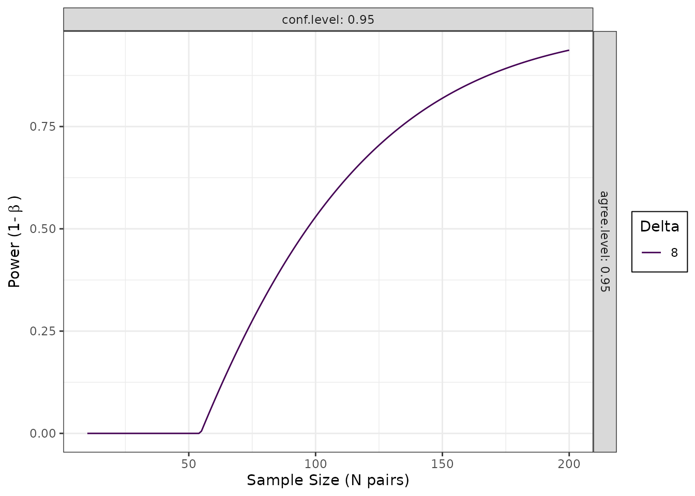

Power Analysis and Sample Size Determination for Agreement Studies
Aaron R. Caldwell
Last Updated: 2026-01-21
Source:vignettes/power_sample_size_vignette.Rmd
power_sample_size_vignette.RmdIntroduction
This vignette provides comprehensive guidance on power analysis and
sample size determination for method comparison and agreement studies
using the SimplyAgree package.
Available Methods
SimplyAgree implements four approaches to power/sample
size calculations:
-
power_agreement_exact()- Exact agreement test (Shieh 2019) -
blandPowerCurve()- Bland-Altman power curves (Lu et al. 2016) -
agree_expected_half()- Expected half-width criterion (Jan and Shieh 2018) -
agree_assurance()- Assurance probability criterion (Jan and Shieh 2018)
Understanding the Approaches
Hypothesis Testing vs. Estimation
The methods divide into two categories:
Hypothesis Testing (binary decision):
-
power_agreement_exact()- Tests if central proportion, essentially tolerance intevals, are within the maximal allowable difference -
blandPowerCurve()- Tests if confidence intervals of limits of agreement fall within the maximal allowable difference
Estimation (quantifying precision):
-
agree_expected_half()- Controls average CI half-width of limits of agreement -
agree_assurance()- Controls probability of achieving target CI half-width of limits of agreement
Method 1: Exact Agreement Test
Overview
Tests whether the central P* proportion of paired differences falls within the maximal allowable difference [-delta, delta].
Hypotheses:
- H0: Methods disagree (central portion extends beyond bounds)
- H1: Methods agree (central portion within bounds)
Usage
power_agreement_exact(
n = NULL, # Sample size
delta = NULL, # Tolerance bound
mu = 0, # Mean of differences
sigma = NULL, # SD of differences
p0_star = 0.95, # Central proportion (tolerance coverage)
power = NULL, # Target power
alpha = 0.05 # Significance level
)Specify exactly three of: n, delta, power, sigma.
Example: Sample Size Calculation
# Blood pressure device comparison
result <- power_agreement_exact(
delta = 7, # +/-7 mmHg tolerance
mu = 0.5, # Expected bias
sigma = 2.5, # Expected SD
p0_star = 0.95, # 95% must be within bounds
power = 0.80, # 80% power
alpha = 0.05
)
#> Maximum iterations reached in gamma computation
print(result)
#>
#> Power for Exact Method for Assessing Agreement Between Two Methods
#>
#> n = 34
#> delta = 7
#> mu = 0.5
#> sigma = 2.5
#> p0_star = 0.95
#> p1_star = 0.9939889
#> alpha = 0.05
#> power = 0.8018321
#> critical_value = 13.57044
#>
#> NOTE: H0: Central 95% of differences not within [-delta, delta]
#> H1: Central 99.4% of differences within [-delta, delta]
#> n is number pairs. Two measurements per unit; one for each method.Method 2: Bland-Altman Power Curves
Overview
Calculates power curves using approximate Bland-Altman confidence intervals using the method of Lu et al. (2016) (which is approximate). Useful for exploring power across sample sizes.
Usage
blandPowerCurve(
samplesizes = seq(10, 100, 1), # Range of sample sizes
mu = 0, # Mean difference
SD, # SD of differences
delta, # Tolerance bound(s)
conf.level = 0.95, # CI confidence level
agree.level = 0.95 # LOA agreement level
)Example: Power Curve
# Generate power curve
pc <- blandPowerCurve(
samplesizes = seq(10, 200, 1),
mu = 0,
SD = 3.3,
delta = 8,
conf.level = 0.95,
agree.level = 0.95
)
# Plot
plot(pc, type = 1)
# Find n for 80% power
find_n(pc, power = 0.8)
#> # A tibble: 1 × 5
#> delta conf.level agree.level power N
#> <dbl> <dbl> <dbl> <dbl> <dbl>
#> 1 8 0.95 0.95 0.800 145Method 3: Expected Half-Width
Overview
Determines sample size to ensure average CI half-width <= delta across hypothetical repeated studies.
Usage
agree_expected_half(
conf.level = 0.95, # CI confidence level
delta = NULL, # Target expected half-width
pstar = 0.95, # Central proportion
sigma = 1, # SD of differences
n = NULL # Sample size
)Specify either n OR delta.
Example: Sample Size for Precision
# Want E[H] <= 2.5*sigma
result <- agree_expected_half(
conf.level = 0.95,
delta = 2.5, # As multiple of sigma
pstar = 0.95,
sigma = 1 # Standardized
)
print(result)
#>
#> Expected half-width and sample size for limits of agreement
#>
#> n = 52
#> conf.level = 0.95
#> target.delta = 2.5
#> actual.delta = 2.49677
#> pstar = 0.95
#> sigma = 1
#> g = 2.509039
#> c = 1.004914
#> zp = 1.959964Method 4: Assurance Probability
Overview
Determines sample size to ensure probability that CI half-width <= omega is at least (1-gamma).
Stronger guarantee than expected half-width — ensures specific probability of achieving target precision.
Usage
agree_assurance(
conf.level = 0.95, # CI confidence level
assurance = 0.90, # Target assurance probability
omega = NULL, # Target half-width bound
pstar = 0.95, # Central proportion
sigma = 1, # SD of differences
n = NULL # Sample size
)Specify either n OR omega.
Example: Sample Size with Guarantee
# Want 90% probability that H <= 2.5*sigma
result <- agree_assurance(
conf.level = 0.95,
assurance = 0.90, # 90% probability
omega = 2.5, # Target bound
pstar = 0.95,
sigma = 1
)
print(result)
#>
#> Assurance probability & sample size for Limits of Agreement
#>
#> n = 115
#> conf.level = 0.95
#> assurance = 0.9
#> actual.assurance = 0.9024848
#> omega = 2.5
#> pstar = 0.95
#> sigma = 1
#> g = 2.306167
#> zp = 1.959964Decision Guide for the Method
Research Goal?
|
|- Hypothesis Testing ->
| \- Need exact Type I error control -> Power for Agreement
|
\- Precision Estimation ->
|- Average precision sufficient -> Expected Half-Width
\- Need probabilistic guarantee -> Assurance ProbabilityHandling Clustered/Nested Data
The Problem
Many studies have clustered data where there are multiple measurements per subject or natural groupings (e.g., repeated measures, multi-center studies). Note, the advice here only applies to clustering but not to situations where replicate measures are taken within a measurement occasion (e.g., multiple measures at the same time point wherein any variation would only represent measurement error).
Standard formulas assume independence1. Ignoring clustering can leads to studies that lack precision. To my knowledge, there is no well developed methods for accounting for clustering in sample size calculations for agreement studies, so we use a common approximation from survey sampling and multilevel modeling: the design effect.
My Best Approximation: Design Effect
The design effect (DEFF) quantifies loss of efficiency due to clustering:
\[\text{DEFF} = 1 + (m - 1) \times \text{ICC}\]
where:
- m = observations per cluster
- ICC = intraclass correlation coefficient
- \(n_{ESS}\) = effective sample size
Effect on sample size: \[n_{\text{ESS}} = n_{\text{independent}} \times \text{DEFF}\]
Understanding ICC
ICC = proportion of variance between clusters:
\[\text{ICC} = \frac{\sigma^2_{\text{between}}}{\sigma^2_{\text{between}} + \sigma^2_{\text{within}}}\]
Application Workflow
- Calculate independent sample size (using power function)
- Determine m (observations per cluster)
- Estimate ICC (from pilot data, literature, or theory)
- Calculate DEFF = 1 + (m-1)*ICC
- Inflate: n_total = n_indep * DEFF
- Calculate clusters: K = the smallest integer greater than or equal to (n_total / m) (i.e., round up n_total / m)
Example: Repeated Measures Design
# Step 1: Independent sample size
result <- power_agreement_exact(
delta = 7, mu = 0.5, sigma = 2.5,
p0_star = 0.95, power = 0.80, alpha = 0.05
)
#> Maximum iterations reached in gamma computation
n_indep <- result$n
cat("Independent pairs needed:", n_indep, "\n")
#> Independent pairs needed: 34
# Step 2: Apply design effect
m <- 3 # 3 measurements per participant
ICC <- 0.15 # from pilot or literature
DEFF <- 1 + (m - 1) * ICC
cat("Design effect:", round(DEFF, 3), "\n")
#> Design effect: 1.3
# Step 3: Calculate participants needed
n_ess <- ceiling(n_indep * DEFF)
K <- ceiling(n_ess / m)
cat("Total observations:", n_ess, "\n")
#> Total observations: 45
cat("Participants needed:", K, "\n")
#> Participants needed: 15Result: Instead of 34 independent pairs, need ~15 participants (45 total observations).
Impact of ICC
# Compare different ICC values
n_indep <- 50
m <- 4
ICC_values <- c(0, 0.05, 0.10, 0.15, 0.20)
for (ICC in ICC_values) {
DEFF <- 1 + (m - 1) * ICC
K <- ceiling(ceiling(n_indep * DEFF) / m)
cat(sprintf("ICC = %.2f: Need %d participants\n", ICC, K))
}
#> ICC = 0.00: Need 13 participants
#> ICC = 0.05: Need 15 participants
#> ICC = 0.10: Need 17 participants
#> ICC = 0.15: Need 19 participants
#> ICC = 0.20: Need 20 participantsWhen Design Effect Works Well
Good situations:
- Balanced designs (equal cluster sizes)
- Moderate ICC (0.01 - 0.30)
- Sufficient clusters (K >= 10)
- Simple two-level hierarchy
Problematic:
- Highly unbalanced clusters
- Very high ICC (> 0.4)
- Small number of clusters (K < 10)
- Complex correlation structures
- Multiple levels of nesting
For complex designs, consider simulation-based power analysis and consult a statistician.
Complete Example with Clustering
# Study parameters
sigma <- 3.3
delta <- 7
m <- 4 # measurements per participant
ICC <- 0.15
dropout <- 0.20
# Step 1: Independent sample size
result <- power_agreement_exact(
delta = delta, mu = 0, sigma = sigma,
p0_star = 0.95, power = 0.80, alpha = 0.05
)
#> Maximum iterations reached in gamma computation
# Step 2: Account for clustering
DEFF <- 1 + (m - 1) * ICC
n_total <- ceiling(result$n * DEFF)
K_pre <- ceiling(n_total / m)
# Step 3: Account for dropout
K_final <- ceiling(K_pre / (1 - dropout))
# Summary
cat("Independent pairs:", result$n, "\n")
#> Independent pairs: 566
cat("Design effect:", round(DEFF, 3), "\n")
#> Design effect: 1.45
cat("Participants (no dropout):", K_pre, "\n")
#> Participants (no dropout): 206
cat("Participants to recruit:", K_final, "\n")
#> Participants to recruit: 258
cat("Total measurements:", K_final * m, "\n")
#> Total measurements: 1032